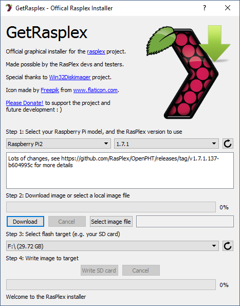
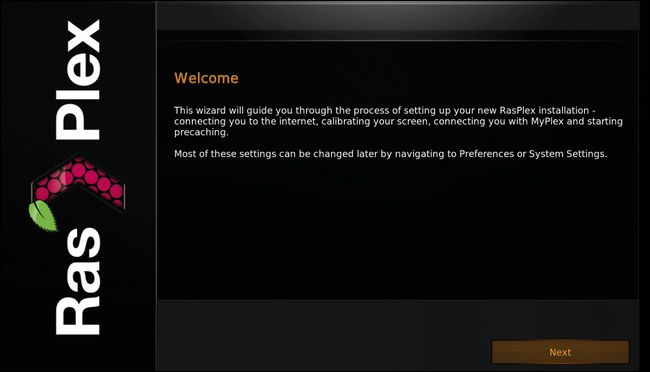
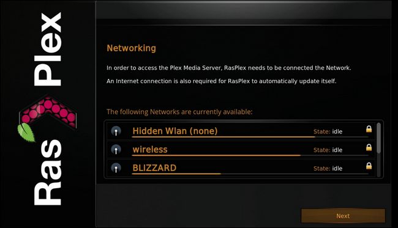
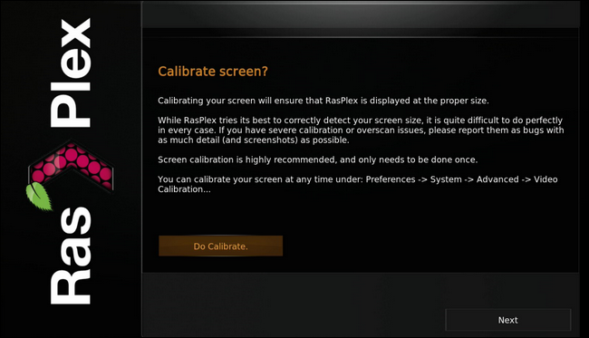
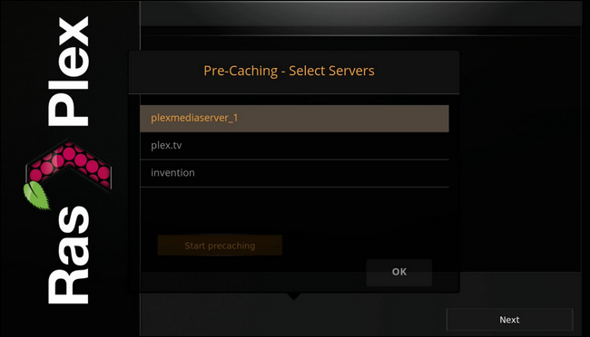
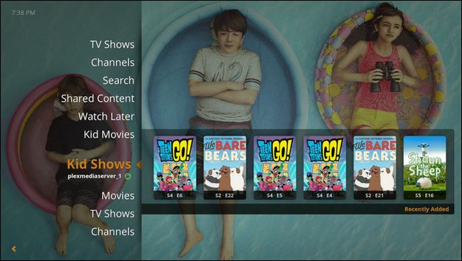

How-To Geek
How to Turn a Raspberry Pi into a Cheap Plex Player with RasPlex
If you’re looking for a robust little Plex client for your HDTV, RasPlex offers a polished experience with snappy playback that’s always on, stable, and easy to control.
Why Use a Pi?
There are a wide variety of ways you can use Plex on your HDTV, but many of them have shortcomings that are easily overcome by using an inexpensive Raspberry Pi. Some Smart TVs, for example, have a built in Plex client, but the performance is usually lackluster and updates are sparse. You can also pair Plex and the Chromecast, but this solution lacks a physical remote, which isn’t very family-friendly.
A Raspberry Pi running RasPlex, however, erases all those issues in one swoop. The heart of RasPlex is the open source Plex Home Theater (a branch of the XBMC/Kodi development tree) and it’s nice and snappy. The user interface is polished and light years ahead of the sluggish and dated looking Plex interfaces you find on too many Smart TVs. The Pi supports traditional remote controls through either HDMI-CEC, an infrared receiver, or the Plex app for iOS and Android. And to top it all off, it’s cheap—the Pi is only $35, and you can leave it running 24/7 because it uses less than a penny of electricity a day.
![]()
![]()
What You Need
To follow along with our RasPlex tutorial you’ll need to square a few things away before diving in. First and foremost, this tutorial presumes that this is not your first home media center rodeo and you already have a Plex server up and running. If you don’t, hit up our guide to getting started with Plex to set up your server.

Second, and more obviously, you’ll need a Raspberry Pi—the newer the better. While we tested RasPlex on multiple editions of the Pi, including the Raspberry Pi 1, 2, and 3, we really recommend using a Raspberry Pi 2 or newer for the smoothest experience. You’ll also need all the necessary Pi accessories—an SD card, a power source, etc. If you’re new to the Raspberry Pi, be sure to visit our Pi guide to make sure you get the best stuff.
Third, and finally, you’ll need something to control the RasPlex. A keyboard will work fine for setup, but as mentioned above, you’ll want a remote that either works with HDMI-CEC, an infrared receiver like the Flirc, or the Plex app for your phone.
With all the prerequisites met, it’s time to dive into actually installing and configuring RasPlex.
Installing RasPlex: One Shot SD Card Setup and Easy Startup Wizard
The days of command-line work and headaches are gone when it comes to Raspberry Pi setup. Just about every major project under the sun, RasPlex included, has a user-friendly installer. Head over to the downloads page and grab the installer. You’ll need a PC for this first step, so grab the installer that matches the OS on your PC (we’re grabbing the Windows edition). Insert the SD you’re using for RasPlex into your computer and launch the installer.
Everything in the installer happens in a single pane, so let’s break it down. In step one, select “Raspberry Pi1” if you have the Pi 1, and “Raspberry Pi2” if you have the Pi 2 or 3. Select the most current version (1.7.1) as of this writing. Click “Download” under the “Step 2” section to download the disk image.
Confirm in the “Step 3” section that the correct drive is selected and then, under “Step 4” click “Write SD card”.

The whole process, from start to finish should be under five minutes with a decent broadband connection. Once the write process is complete, safely eject the SD card from your computer and insert it into your powered-down Raspberry Pi. Plug in your Pi to boot it up and start the process. For a minute or two, you’ll see the RasPlex logo and some text in the upper corner as the disk image unpacks and creates partitions. Once that process is complete, you can continue with the configuration process below.
Configuring RasPlex: Tweak the Basics and Get Watching
After the unpacking process mentioned above, you’ll be kicked right into the RasPlex setup wizard. Every setting in the wizard can be changed in the system menu later on, but there’s no reason not to take care of everything in one shot here. Click “Next” to get started.

First you’ll configure your Wi-Fi connection (this step won’t appear if you’re using a wired Ethernet connection). Select your network’s SSID and input your passcode.

After the network setup, you’ll be prompted to calibrate your screen. This is a simple process wherein you adjust a series of right angles to fit the corners of your screen, check for squareness, and decide where you want the subtitles to sit on the screen. It only takes a moment and it really improves how things look. The only reason we’d recommend skipping this step is if you’re setting up the RasPlex box on a device that isn’t the final display (e.g. you’re setting it up using your desktop monitor but you’re going to move it to your living room).

Next, you’ll be prompted to log in to your Plex account. As the help text notes on the screen, you don’t have to log in to your Plex account, but come on—Plex accounts are free and they’re the primary reason Plex is so great. Click “Sign in to Plex.” and then take the resulting 4 character PIN and head over to plex.tv/pin to complete the process.
After signing in, you’ll be prompted to “precache” your library’s thumbnails, fanart, and other images, which we recommend. Select “Start precaching” then select the server (or servers if you have multiple). The server selection box has such a low opacity that it looks like you’re supposed to click “Start precaching” again but that’s just an odd display trick; instead, click over with your remote and select “OK” instead.

Even with a large library, it should only take a minute or two to churn through everything (slightly slower on older Pi hardware), and then you’re done with the setup wizard. At that point you’ll see your Plex library right at your fingertips, like so:

All your movies, TV shows, movies, “Watch Later” content, and everything else on your Plex server is easily accessible from the left-hand navigation pane. You can dive right into watching your content now or, if you want to do some further tweaking (like downloading new skins for RasPlex) you can click left and pull up the Settings or Preferences menus to make further adjustments—but you’re likely to find that everything runs so smoothly right out of the box that there’s little need to tweak anything.
In the mood to squeeze in some more Plex customization and fun? Check out our tutorial on sharing your media library with friends and how to optimize your content for remote streaming.
![]()
![]()
![]()
![]()
![]()
![]()
![]()
![]()
![]()
What would you say about using this on a pi zero v1.3? Because I have an extra one just laying around and would love to make this happen with it.
Nice article. I'd like to add that the Chromecast can be controlled by HDMI-CEC. Looks like in the article the Chromecast is listed as devices that cannot be controlled remotely. It supports pause, play and stop as far as I know.
On a somewhat related note, I use my Raspberry Pi 3 as a low power (as in electricity usage) plex server. It's a bit difficult to setup, and there's some drawbacks (settings up your own agents for cases of shows with different broadcast/dvd order is difficult for instance). But once it is all setup, it works very well. Started with a Raspberry Pi 2, but made the switch to the 3 and honestly I wouldn't recommend less than the 3.
You can get Rasplex onto a Pi Zero, yes. Use the Pi 1 option in the setup dialog (this works well since they are actually similar devices on a hardware level).
As the article mentions though, the Pi 1 (and therefore Zero) will not perform as well as the Pi 2 or 3.
I am extremely interested in using a Pi as my main plex server. The price point and functionality are unprecedented. However, this can be difficult today when it comes to the Pi's processing power (for transcoding multiple HD streams, 4K transcoding/upscaling), HHD data rates (no USB 3.0 or direct sata support), and 10/100 ethernet limitations (must use USB adapter for speeds greater than 100Mbps).
I know there are some that currently use a Pi for their media server but I can't get over the limitations. But those may or may not be a big deal to everyone.
WD makes some awesome NAS servers built for Plex, but selling them for north of $1000. Maybe the Pi 4 will alleviate some of these challenges.